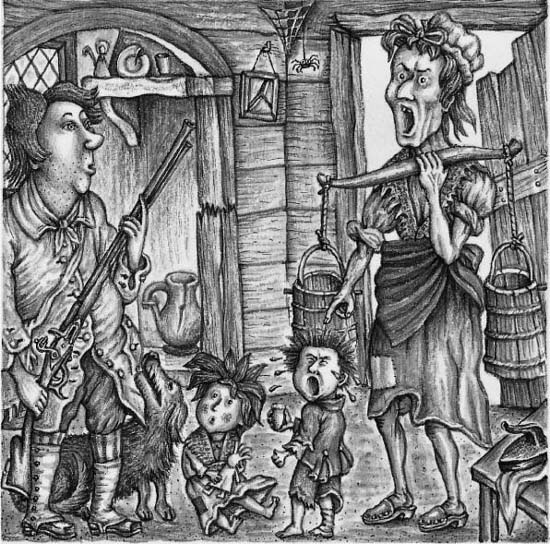
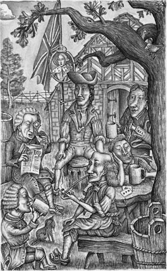
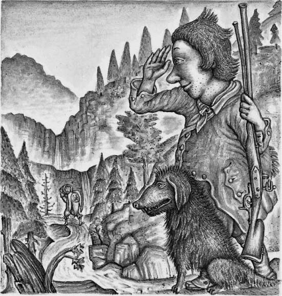
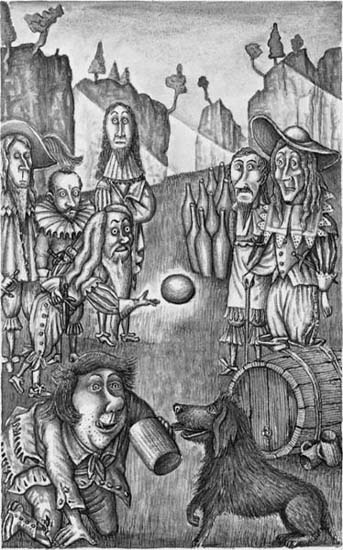
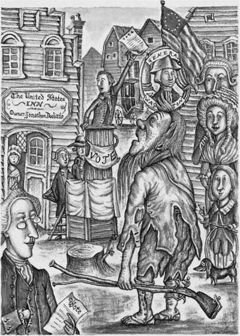

Listen to Part 1:

Life in the Village
The Catskill Mountains are west of the great Hudson River, in North America. The mountains are very beautiful, but they are also very strange. The colors of the mountains are always changing. When the weather is good, they are deep blue. But often, the tops of the mountains are covered with gray clouds.
Hundreds of years ago, Native Americans lived there. These people said, “The mountains are haunted—spirits live on them. The spirits can change the weather. They can send sunshine and they can send clouds.”
There are many strange stories about the Catskill Mountains. This is one of those stories. It tells about a farmer named Rip Van Winkle. Rip lived in a small village at the bottom of the mountains. The village had been built by the Dutch settlers, long before Rip was born.
Rip Van Winkle lived in the village with his wife and two children—a boy who was also named Rip, and a girl named Judith. The farmer was popular with the men and women of the village—they all liked him. He was always kind and helpful to them.
“Rip is a fine man,” the villagers often said to each other. “He helps everybody.”
Listen to Part 2:
Rip was also popular with the children of the village. He made toys for them and sometimes he told them exciting stories about ghosts and spirits. The children often followed him around the village. Animals liked Rip too. Dogs never barked at him.
But the village women felt very sorry for Rip. The reason for this was his wife. She was quite different from Rip.
“Rip’s wife is a terrible woman,” the villagers said. “Why does he stay with her? She shouts at him from morning till night. She never lets that man have any peace.”
This was true—Rip’s wife was always angry with him. She was angry because Rip was lazy.
Rip owned a small farm but he never did any work on it. He liked an easy life. He was not interested in money. He never made any money from his farm. He never earned any money for his family.
“There’s something wrong with the ground on my farm,” he often told people. “Nothing grows there. The fences are always falling down. The animals are always running away. I can’t work on that farm. Nothing ever goes well there.”
So Rip did not work on his farm. He went fishing or he went hunting. Sometimes he even helped his friends on their farms. All these things made his wife very upset.
“Our farm is the worst in the country,” she shouted at Rip one day. “Why? Because of you. You’re lazy! It’s all your fault! When are you going to mend the fences? Last week our cow escaped from its field again and it ate all our vegetables.”
“Well, I started to mend the fences yesterday,” said Rip. “But it began to rain, so I had to stop.”
“And look at our children!” his wife shouted. “They’re the dirtiest, untidiest children in the village. Look at their old clothes. I don’t have any money to buy new clothes for them. And you don’t care about that. Oh, why did I marry a lazy man?”
Listen to Part 3:

Rip started to move quietly towards the door. When his wife shouted at him like this, he never answered her.
“Where are you going?” shouted Rip’s wife.
“It’s a nice day,” replied Rip. “I’m going to take Wolf out for a walk. I won’t be long.”
Wolf was Rip’s dog. Rip and Wolf were very good friends. Rip took Wolf everywhere with him. Rip’s wife hated Wolf. She often shouted at the dog and sometimes she beat him with a stick. This made Rip very unhappy. Wolf loved Rip, his master, but he was afraid of Rip’s wife.
“Yes, take that dirty animal out of here!” shouted Rip’s wife. “He’s as lazy as you are. And don’t bring him back!”
Rip was very happy to get out of the house and away from his wife. He went at once to the village inn.

The village inn was a quiet place. The men of the village loved to spend time there. They sat outside the inn on warm summer days and they drank beer. They told stories and they talked about all the things that were happening in the village. The inn was a very old building. On a tall wooden pole outside it, there was a picture of King George the Third.
The owner of the inn was named Nicholas Vedder. From morning till evening, he sat outside the door of the inn, under a large tree. Most of the time, Nicholas smoked his pipe and listened to his customers talking. He did not say very much himself, but sometimes he nodded his head.
Listen to Part 4:
The village schoolmaster, Derrick Van Bummel, often joined the group of men at the inn. Most of the people in the village could not read. But sometimes, a traveler came to the inn and left a newspaper. Then Derrick read the newspaper to the men at the inn. The stories in the news-paper were old ones. They were about things that had happened many months before. But the villagers did not care about that. They enjoyed hearing the stories.

Derrick read the newspaper to the men at the inn.
They enjoyed hearing the stories.
Rip Van Winkle sat down at a table outside the inn with some other men. Nicholas Vedder was not sitting under the tree, but a minute later, he came out of the old building.
“Good morning, Rip,” said Nicholas. “How are you today? Would you like some beer?”
“Yes, please, Nicholas,” said Rip.
Nicholas brought him a mug of beer and sat down beside him at the table. Wolf lay on the ground next to Rip.
Rip drank his beer slowly. Soon, he started to feel happy again. He began to forget about his wife.
But suddenly a hand grabbed his shoulder. A terrible voice shouted, “So here you are, you lazy, stupid man!”
Listen to Part 5:
It was Rip’s wife. She had come to the inn to find her husband. She shouted at him for several minutes. Then she shouted at Nicholas Vedder and the other men too.
“And you men are as bad as my lazy husband!” she shouted. “You stop him from working. He comes here and he drinks beer with you. You’re all stupid and lazy—all of you.”
She pushed Rip off his chair and she pulled him home.
Rip tried to go to the inn a few times more. But his wife always followed him and pulled him home. So finally, he stopped going there. But he became very unhappy.
“What can I do?” he thought. “I can’t stay in the house all day. And I don’t want to work on the farm.”
After that, Rip and Wolf often took walks in the forest near the village. They sat for hours under a tree in the middle of the forest. But Rip’s wife always followed him and shouted at him.
One fine autumn day, Rip had an idea.
“It’s a beautiful day, Wolf,” he said to the dog. “Let’s go up into the Catskill Mountains. Let’s go hunting. I’ll bring my gun. Perhaps I’ll shoot some squirrels. We’ll have a good time in the mountains. My wife will never follow us up there. She’s often unkind to you. I know that and I’m very sorry about it. But I’ll always be your friend.”
Wolf looked at his master and wagged his tail happily. He wanted to get away from Rip’s wife too.
Listen to Part 6:
Rip picked up his gun. A few minutes later, he and Wolf went quietly out of the house. Rip’s wife did not see them go.
A Strange Meeting
Rip and Wolf walked up a path into the mountains. They walked for a long time. They did not see any squirrels, but they were happy to be together. At last they arrived at one of the highest parts of the Catskill Mountains. They left the path and they found a wide, grassy place between some trees.
It was late afternoon now, and Rip was very tired. He sat down on the grass and Wolf lay down beside him. To his left, through an opening between the trees, Rip could see the green land with its little farmhouses, far below. And he could see the great Hudson River far away. The water was shining in the afternoon sun.
To his right, Rip could look down into a deep valley in the mountains. This valley was wild and lonely. It was dark too. The sunlight could not reach the bottom of the valley.
Rip and Wolf lay on the grass for a long time. The sun started to go down and soon the air was getting cold. Night was coming. The long blue shadows of the mountains began to cover the valleys below. Smoke started to rise from the chimneys of the little farmhouses. Rip thought of his wife, who was waiting in the village. She was going to be angry with him. His heart grew heavy— he was unhappy and afraid.
At last, Rip stood up.
Listen to Part 7:
“Let’s go, Wolf!” he said. “It’s getting late. It will be dark before we get home.”
As Rip turned towards the path, he heard a voice. It was coming from somewhere below him.
“Rip Van Winkle!” the voice called. “Rip Van Winkle!”
Rip looked around in surprise. “Who is calling me?” he shouted. But he could not see anybody. There was only a large black bird flying across the sky.
“I’m dreaming,” he thought. “The sound was the cry of a bird, not the voice of a person. Nobody comes up here.”
But then he heard the sound again. And this time it seemed nearer. It was weak and high, like the voice of an old man.
“Rip Van Winkle! Rip Van Winkle!”
“It is a person,” thought Rip. “But how does he know my name?”
At that moment, Wolf started to growl—he made a deep, angry noise in his throat. He walked very close to his master. The hairs on the dog’s back were standing up and his body was shaking with fear.
“What’s wrong, Wolf?” Rip asked the dog. “Don’t be afraid!”
Listen to Part 8:
Rip looked down into the dark valley. He suddenly saw an old man coming slowly up a steep path from the bottom of the valley. The old man was carrying something on his back.

Wolf growled again.
“It’s only a poor old man,” Rip said to Wolf. “But who is he? And what is he carrying on his back? I’ll go down and talk to him. Perhaps I’ll be able to help him.”
Rip walked down the path to meet the old man. When he got near him, he stopped in surprise. The man was very short and he had thick hair and a long gray beard. But the most unusual things about him were his clothes. The men in Rip’s village did not wear clothes like these. This man’s clothes were very old-fashioned. They were like the clothes that the Dutch settlers had worn, a hundred and fifty years before.
The old man was carrying a large wooden barrel on his shoulder. He did not speak to Rip, but he made a movement with his hand. This was a sign to Rip. The man wanted Rip to carry the barrel.
“This is very strange,” thought Rip. “Who is this old man? And why is he carrying a barrel up the mountain? I don’t know! But the barrel must be very heavy. I’ll help him.”
Rip stepped forward and he took the barrel from the old man. At once, the man turned off the path, onto another one. This narrow path had once been a river, but it was dry now. There was no water running in it.
Rip followed the old man, carrying the barrel on his shoulder. Wolf walked by Rip’s side. The old man never spoke and he never turned around.
Suddenly Rip heard a very deep noise. It was coming from somewhere above them.
Listen to Part 9:
“That sounds like the noise of thunder,” he said to himself. “But it’s a very strange kind of thunder. And there are no clouds in the sky. It isn’t going to rain—I’m sure of that.”
At last, Rip, Wolf and the old man arrived at the top of the path. Lots of very tall, thin rocks stood there. And there was a narrow opening between two of the rocks. The old man walked through this opening and Rip and Wolf followed him. A moment later, Rip stopped in surprise.
They were in a wide grassy place, with tall cliffs of rock all around it. There were trees on the tops of the cliffs. The evening sun was low in the sky. It didn’t shine into the grassy place between the cliffs. Rip could only see a very small piece of sky above his head.
In the middle of the wide grassy place, a group of old men were playing a game of nine-pins. They were rolling large wooden balls at nine “pins”, which were like large wooden bottles. Each player tried to knock over as many pins with one ball as he could. As the old men rolled the big wooden balls, the balls made a deep, heavy noise.
“Ah! That’s the noise that I heard,” thought Rip. “It wasn’t thunder. But who are these old men? There’s something very strange about them.”
All the men were wearing old-fashioned clothes. There were knives hanging from their belts and they wore hats with feathers. Their faces were very strange and white. One man had a very large, wide face with tiny eyes. Another man had a very big nose. They all had beards of different shapes and colors. One thin old man seemed to be the leader of the group.
For a few minutes, Rip and the man who he had met stood and watched the game.
“I’ve seen men dressed like this before,” thought Rip. “But where?”
And suddenly he remembered.
“Yes, I know!” he said to himself. “The village schoolmaster has an old painting in his house. The Dutch settlers brought it from the Netherlands when they came to America in 1625. These men are wearing clothes like the people in that painting. But that picture was painted a hundred and fifty years ago.”
Listen to Part 10:
There was another strange thing about the old men. Again and again, they rolled the balls in their game of nine-pins. But they never spoke to each other. The only noise that Rip could hear was the sound of the heavy balls.
Suddenly, Rip was very frightened!
A moment later, the old men saw him and they stopped playing their game. They stared at him but they did not smile or speak. Their eyes were like the eyes of dead men. Rip’s heart beat fast with fear. He wanted to run away, but his legs would not move.
The old man who Rip had followed took the wooden barrel from him. He put it down on the grass. He put some big wooden mugs next to it. He poured liquid from the barrel into the mugs. The liquid was a lovely golden color.
The other old men watched him pouring the liquid. Then the leader of the group made a sign to Rip.
“He wants me to give the mugs to all the old men,” thought Rip. He quickly gave a mug to each man. They all drank the liquid in silence. Then they put down their mugs and began their game of nine-pins again. They did not look at Rip again. Soon, he began to feel less afraid.
Rip was very tired after his long walk. He was also very thirsty. He looked at the barrel, then he looked at the old men again. They were still busy with their game.
“They’ve forgotten about me,” Rip said to himself. “I’ll have a little drink from the barrel.”
Rip poured some of the golden liquid into a mug and drank it. It tasted delicious.

Listen to Part 11:
Rip poured some of the golden liquid into a mug and drank it.
It tasted delicious.
“That was wonderful!” he thought. “I’ll just have a little more.”
Rip had another drink. Then another, and another. He filled the mug again and again. And still the strange old men went on playing their game.
After a while, Rip’s eyes started to close. The empty mug fell from his hand. Then his gun fell to the ground, but he did not care. Rip could no longer stand up. He lay down on the grass and soon he was asleep.
Down from the Mountain
Rip woke up suddenly. He was lying in the grassy place where he had first heard the strange old man’s voice. It was a bright, sunny morning and the birds were singing in the trees. High above him, a beautiful golden bird flew across the wide blue sky.
Rip’s head was full of pain. He sat up and he rubbed his eyes with his hands. He remembered the strange old men with their old-fashioned clothes and their game of nine-pins.
Listen to Part 12:
“What happened to them?” Rip asked himself. “And how did I get back to this place? Have I slept here all night? And where is the old man with the barrel of wonderful golden liquid? Oh, why did I drink so much of it last night? What will I tell my wife?”
Rip looked around for his gun but he could not find it.
But he did see a very old, broken gun lying on the grass beside him. The metal of the gun was covered with brown rust.
“Where’s my gun?” thought Rip. “Did the old men steal it? Did they leave this rusty old gun for me?”
Then suddenly Rip remembered his dog.
“Where’s Wolf?” he thought. “Perhaps he’s hunting squirrels.”
Rip called Wolf for a long time, but the dog did not come.
“The old men have taken Wolf too,” Rip said to himself. “I’ll go and find them. I’ll ask them for my dog and my gun.”
Rip got up slowly. He could not move very easily. As he walked, he felt sharp pains in his arms and legs.
“I don’t feel very well,” he thought. “I feel like an old person today. It wasn’t very good for me to sleep on the cold ground last night. If I am ill, I’ll have to stay in bed. Then my wife will be very angry.”
Listen to Part 13:
Rip found the path where he had followed the old man with the barrel. But then he had a surprise. The day before, the path had been dry. But now a river was running down it. The bright clear water splashed over the rocks.
“That’s very strange,” thought Rip. “I didn’t see a river here yesterday.”
Rip climbed slowly up beside the river. At last he saw the tall, thin rocks in front of him.
“I remember those rocks,” Rip said to himself. “We walked through a narrow opening between them. The men were playing nine-pins on the other side of the opening. Wolf can’t be far away now.”
But now Rip had another surprise. There were no openings between any of the rocks in front of him. He looked and looked for a long time. But there was no path through the rocks.
Rip was very puzzled. “What’s happened?” he asked himself. “Last night, we went through an opening between two of those rocks. And now there is no opening.”
He called again and again for Wolf. But Wolf did not come. When Rip stopped calling, the only sounds were the songs of the birds.
By now, Rip was very hungry.
“What can I do?” he thought sadly. “I don’t want to go home without my dog and my gun. But I can’t stay here any longer. I need some food. I’ll have to go down to the village and speak to my wife.”
Rip walked down the mountain with the old, broken gun. His heart was very heavy. As he got near to his village, he met several people. But he did not know any of them. This surprised him very much.
Listen to Part 14:
“I know everybody who lives in my village—I’m sure of that,” he thought. But he did not know these people— they were strangers. And there was something strange about their clothes. He’d never seen clothes like them before.
When the people saw Rip, they also seemed very surprised. They all put their hands on their chins. They did this again and again. At last Rip, put his hand on his chin too. He had a long beard!
“I didn’t have this beard yesterday,” he thought. “What has happened to me?”
At last, Rip entered the village. Soon, there were children following him. But they weren’t the village children that he knew. They pointed with their hands at his long gray beard, and they laughed at him. As he walked through the village, dogs barked at him. He did not know any of the dogs.
The village seemed to have changed. It was bigger than it had been the day before. There were more houses and more people. Strangers’ names were written above the doors of the houses, and strangers’ faces looked out of the windows.
But the Catskill Mountains were still the same. And the Hudson River was still shining in the sun.
Rip was becoming more and more puzzled.
“I’ve been away from this village for one day,” he said to himself. “But everything here looks different. What was in that strange drink last night? It has done something terrible to my mind. I’ve gone crazy.”
Listen to Part 15:
Rip walked slowly to his own house. He was listening for the loud, angry voice of his wife. But his house had changed too. Nobody was living there. The roof had fallen and the doors and the windows were broken. A thin old dog was looking for food in the road outside the house.
“Can that old dog be Wolf?” thought Rip.
He called Wolf’s name, but the dog did not come to him. It growled for a moment, then it walked away.
“My own dog has forgotten me,” thought Rip sadly.
He went inside the house. All the rooms were empty. Rip called loudly for his wife and children. Nobody answered him. Suddenly, he felt very lonely.
“I’ll go to the inn,” he thought. “I’ll ask Nicholas Vedder what has happened here.”
Rip went to the inn. But everything there was different too! The old building had disappeared. In its place was a large new building. Some words were written above the door. They said:
The United States Inn
Listen to Part 16:

Owner—Jonathan Doolittle
The great tree where Nicholas Vedder had sat every day was gone. There was a flag hanging from the top of the tall pole. Rip stared at the flag. He was astonished. It wasn’t the flag of Britain. It was red, white and blue. But there was a strange pattern of stars and stripes on the flag.
“Whose flag is this?” Rip asked himself. “I’ve never seen it before. But the picture of King George is still on the pole too. That’s something which hasn’t changed.”
But Rip was wrong. Even the man in the picture had changed. The color of his coat had changed from red to blue. He was no longer wearing a crown on his head. He was wearing a strange hat. Around the edge of the picture, there was a name in large letters—GENERAL WASHINGTON.
Listen to Part 17:
“I Don’t Know Who I Am”
A crowd of people was standing near the door of the inn. Rip looked at all the people carefully, but he did not know any of them.
Rip thought about Nicholas Vedder, who often sat for hours under the tree, smoking his pipe. He thought about Derrick Van Bummel, the schoolmaster, who read everyone stories from old newspapers. Where were they?
Today, the inn was not a peaceful place. The people outside it were walking about busily. A tall man was giving notices printed on pieces of paper to the others.
Everybody was talking about strange things—elections, votes, the Congress. Rip did not understand any of these words. To him, they were like words in a foreign language.
The people in the crowd began to look at Rip Van Winkle. They stared at this strange-looking man with his long beard and his rusty old gun. After a minute, the tall man walked over to him.
“Who are you going to vote for in the election, sir?” he asked.
Rip stared at the man. He was astonished. He did not understand the question, so he could not give an answer.
Listen to Part 18:
Then a fat man came forward. He was wearing a strange hat. General Washington was wearing the same kind of hat in the picture outside the inn. The fat man looked at Rip in an unfriendly way.
“Why have you come to our election with a gun?” he asked angrily. “Are you going to make trouble in our village?”
“No!” said Rip. “I don’t want to make any trouble. I live in this village too. I’m a quiet man and I’m loyal to King George.”
At once the people began to shout.
“He’s a spy!” they shouted. “He’s working for the British government. Take him away.”
Rip was very frightened. He could not understand what was happening.
“Please listen to me,” he said. “I’m not a spy. I’m looking for my friends. They always drink here at this inn.”
“Well, who are they?” asked the fat man with the hat. “What are their names?”
Listen to Part 19:
Rip thought for a moment, then spoke again.
“Where’s Nicholas Vedder today?” he said.
The crowd was silent for a moment. Then a man replied. He sounded very puzzled.
“Nicholas Vedder? He died eighteen years ago. He’s buried in the graveyard beside the church.”
“Well, where’s Derrick Van Bummel, the schoolmaster?” asked Rip.
“Haven’t you heard about him?” said the man with the hat. “He’s very famous. He joined the army at the beginning of the war. He became a great commander. And now he’s in the Congress—he’s a member of the government of the United States.”
Rip could not understand these answers. What was the man talking about? What war? What was the Congress? And what was the United States? Also, the man had said, “Nicholas Vedder died eighteen years ago.” But Rip had seen him yesterday.
Rip asked about some other friends, but none of the answers made him feel better. “They’ve all died or moved away,” the man with the hat said. Rip was very sad. This was his village. He had lived here all his life. But now he felt like a stranger. Rip was sad, but he was becoming angry too.
“Does anybody here know Rip Van Winkle?” he shouted at last.
“Oh, yes, we know him,” someone replied. “That’s Rip Van Winkle, the lazy man over there by that tree.”
Rip looked at the tree. A young man was leaning against it. His clothes were dirty and his hair was very untidy. Rip’s mouth fell open with astonishment.
“That man is me,” he thought. “I looked just like that yesterday, when I went up the mountain. But if that man is me, am I somebody else?”
“Who are you, sir?” the man with the hat asked Rip. “What’s your name?”
“I don’t know,” replied Rip slowly. “I don’t